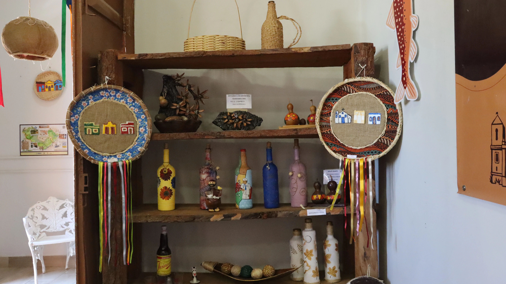

Sobre o local
O Centro Cultural de Januária é um importante espaço dedicado à preservação da memória, arte e manifestações culturais do município. Instalado em um bonito casarão histórico da cidade, o local abriga acervos, exposições artísticas, eventos culturais e oficinas que valorizam as tradições de Januária e da região do Médio São Francisco.
Um ponto de visitação fundamental para moradores e turistas que desejam conhecer a riqueza histórica, o artesanato local e a produção artística de Januária.
Informações sobre o local
Horário de funcionamento: Aberto de Segunda a Sexta, das 8h às 18h
Tipo de visita: Visita livre / Guiada
Formas de pagamento: Não há cobrança para acesso
Pet Friendly: Sim (áreas externas)
Contato: (38) 99266-4400 (WhatsApp) - secretariamunicipalturismo@januaria.mg.gov.br